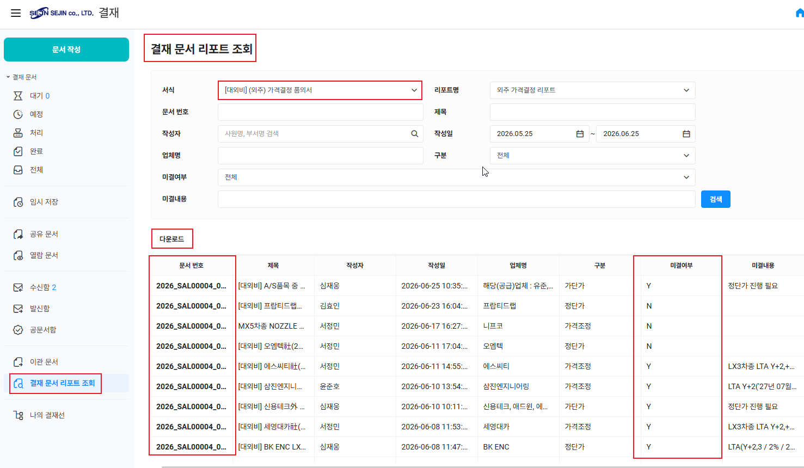
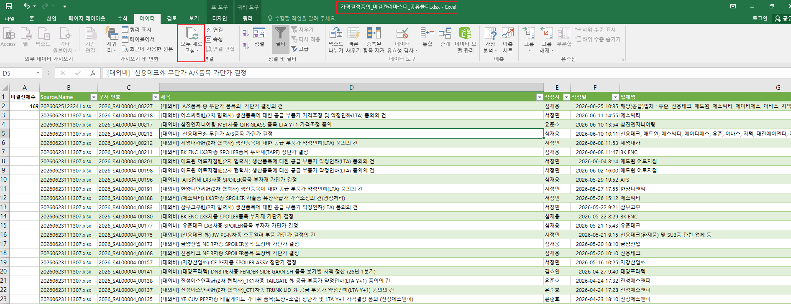
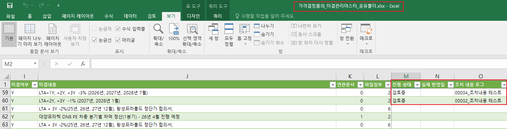

그룹웨어 미결업무 연속성 개발방안 제안
"수작업 감소 및 안정성 확보" - 파워쿼리 기반 미결업무 개선 방안 제안
시스템 개요 및 구축 현황
미결업무 자동화 시스템 도입 배경
기존 그룹웨어에서 결재문서 원본(원가 외주 가격결정품의서, 구매 가격결정품의서 등)은 결재완료된 문건은 변경이 불가하도록 구성되어 있습니다. 당연히 수정이 불가하게 제약되어 있어, 미결 대상 문서를 별도로 추적하고 이력을 관리하는 데 별도 수작업(복사·붙여넣기, VLOOKUP 등)이 병행되어야 합니다.
또한 사용자는 수식을 관리할 필요 없이 간단한 단축키 새로고침만으로 미결 내역을 추적할 수 있습니다."
- 결재 원본 유지: 다운로드 원본을 수정하지 않고 지정된 폴더에 넣어두기만 하면 자동으로 분석이 수행됩니다.
- 이력 영구 관리: 고유 '문서번호' 기반으로 사용자 입력 기록이 유기적으로 유지되도록 설계되었습니다.
- 사용자 커스텀 제공: 마스터 파일 자체가 친숙한 엑셀 시트로 제작되어 있어, 사용자가 필요한 경우 원본 시트 데이터를 활용해 직접 피벗 테이블이나 대시보드를 생성하여 활용할 수 있습니다.
제안된 관리방안 내 데이터 흐름도
일반 사용자는 별도의 프로그램 없이 사용자 엑셀내 파워쿼리 프로세스로 간단하게 구현 할 수 있습니다.
그룹웨어 결재문서 조회 및 다운로드
원가 외주 및 구매 가격결정품의서 리포트에서 일자별 결재완료 원본 데이터를 엑셀 형식으로 조회하여 다운로드합니다.
지정된 업무공용폴더 파일 저장
다운로드한 엑셀 원본 파일을
지정 경로(업무공용폴더:\가격결정품의_관리)에
이름 변경 없이 그대로 복사/저장합니다.
파워쿼리 기반 자동 병합 및 중복 정제
마스터를 새로고침할 때 파워쿼리가 폴더 내 모든 파일을 자동 스캔하고, 최신작성일 기준 내림차순 정렬 및 중복을 자동으로 제거하여 데이터 원본을 정제합니다.
마스터 시트 연동 및 미결 업무 관리
정제된 최신 정보가 미결관리 마스터 시트에 반영됩니다. 사용자가 입력해 둔 기존 조치 이력 로그는 고유 '문서번호'를 기준으로 자석 매칭(행 밀림 방지)되어 안전하게 이력이 보존됩니다.
일반 사용자용 실무 사용 가이드 (3-Step)
하루 3단계 동작으로 미결업무 관리 끝
사용자는 복잡한 수식 수정이나 파워쿼리 코딩을 몰라도 됩니다. 매일 아래 3단계 동작만 순서대로 실행하십시오.

gw_download_save.png
[클릭 시 가이드 기획 확인]
1단계: 다운로드 및 저장
master_refresh.png
[클릭 시 가이드 기획 확인]
2단계: 모두 새로고침
action_logging.png
[클릭 시 가이드 기획 확인]
3단계: 확인 및 기록시스템 핵심 기능 및 도입 기대 효과
미결업무 자동화 시스템의 주요 탑재 기능
- 파워쿼리 통합 자동 정제: 사용자가 지정 폴더에 무작위로 축적한 과거 및 현재 데이터를 자동으로 병합합니다. 중복 데이터는 최신 작성일을 기준으로 완전 자동 중복제거 처리되어 사용자의 데이터 관리 부담이 0%가 됩니다.
- 행 밀림 방지 기술 (자석 매칭): 엑셀 정렬 순서가 바뀌거나 새로운 행이 하단에 대거 유입되어도, 사용자가 수동 작성한 조치 기록들이 '문서번호' 고유키를 따라가며 제자리에 밀착 매칭되도록 보정 로직이 적용되었습니다.
- 선제적 마감 지연 경보(사용자 조건제작): 품의서 결재 완료 후 단가 미반영 기간을 실시간 경과일로 계산하여, 7일 이상 경과 시 노란색 경고, 14일 이상 경과 시 빨간색 위험 경보를 조건부 서식으로 실시간 시각화합니다.
- 사용자 주도 확장성 (Excel-Native): 본 마스터 파일은 엑셀 원본 시트를 기반으로 작동하기 때문에, 별도의 복잡한 데이터베이스 솔루션 없이도 사용자가 피벗 테이블을 열어 품의서별 진행률 통계를 내거나 맞춤형 차트 요약 페이지를 매우 손쉽게 생성하여 활용할 수 있습니다.
도입에 따른 3대 정량·정성적 기대 효과
- 업무 시간 단축: 결재 이력 복사/붙여넣기, 수식 검증 작업이 사라져 수작업 제거 및 핵심 업무 집중이 가능합니다.
- 안정적 이력 보존: 담당자가 변경되거나 대량의 데이터가 정렬·필터링되더라도 조치 로그가 영구적이고 일관성 있게 추적 보존됩니다.
- 마감 지연 리스크 해소: 지연 일수 경고 시스템을 통하여 결재 완료 문서의 누락이나 마감 임박 건을 사전에 즉시 확인 및 대응하여 마감 손실을 원천 차단합니다.
즉시 실행 미션 및 자주 묻는 질문(FAQ)
사용자 체크 사항
- 공용 폴더 연결 권한 확인: PC에서 네트워크 경로 `업무공용폴더:\가격결정품의_관리` 경로에 정상 접근되는지 테스트하십시오.
- 마스터 파일 오픈 및 단축키 확인: 마스터 엑셀을 열고 `Ctrl + Alt + F5`를 입력하여 파워쿼리 새로고침 프로세스가 구동되는지 확인하십시오.
- 커스텀 요약 기능 탐색: 원본 데이터 로드가 완료되면 피벗 테이블 기능을 활용해 팀에서 필요한 커스텀 미결 요약 테이블을 구성해 보십시오.
- 수동 기록 기입 습관화: 조치 후 `[진행 상태]` 및 `[실제 반영일]`을 빠뜨리지 않고 마스터에 바로 입력하는 규칙을 적용하십시오.